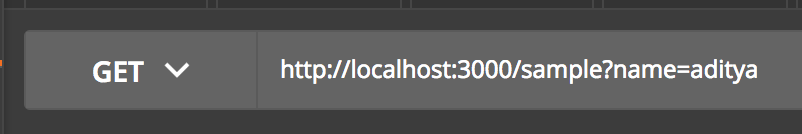
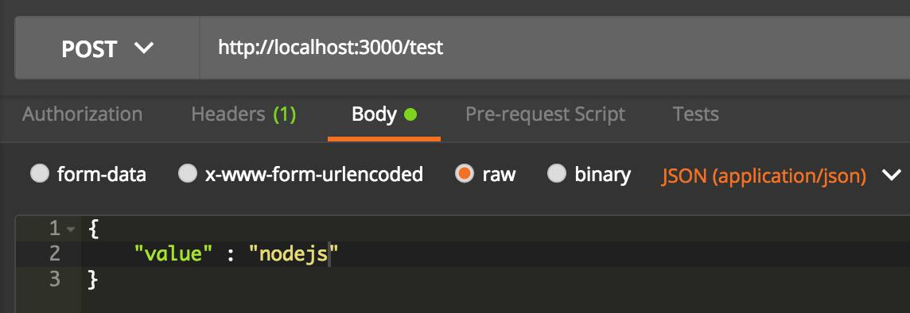

NodeJS is most commonly used with Express framework. Also a bunch of other external libraries are used with NodeJS.
The Reason these frameworks and libraries are used along with NodeJS is to make development much more easier and quicker.
While working on any real project, it is best to use frameworks and libraries where needed to enable quicker development 😄
That said, in this post I will be showing how to build Simple REST API’s with NodeJS without using express framework or any other external libraries. This article will use only those functionalities that are provided with NodeJS itself.
The reason for this is to show how NodeJS can be used without frameworks and libraries as well 😄. Also this will give a better idea as to how NodeJS works 😄
Pre-requisite
Install NodeJS from https://nodejs.org
Code
The code for this article is available in my github repo.
Let’s get started with the code 😄
Create a folder called as simple-rest-apis-nodejs-without-frameworks. This will be our NodeJS Project folder.
Go into the project folder and use npm init to make the project into a node project. The commands to do this are
cd simple-rest-apis-nodejs-without-frameworks
npm init
package.json
After running npm init a package.json file is created within the project folder.
package.json has information about your project like project name, version, description etc. Also package.json is where you will be adding node dependencies. In this article we won’t be having any dependencies since we are using only functionalities that are provided by NodeJS itself.
First API
server.js
create a file called server.js inside the project folder. This will be the starting point of our application.
Copy the following code into server.js
const hostname = '127.0.0.1';
const port = 3000;
const server = require('./controller.js');
server.listen(port, hostname, () => {
console.log(`Server running at http://${hostname}:${port}/`);
});
This code actually relies on a file called as controller.js which we will be adding soon. This code is telling that a server needs to listen on port 3000 and in localhost
The server creation is done in controller.js
controller.js
This is the file where we will be creating the server and defining our rest endpoints. Create a file called as controller.js
Let’s create a single GET endpoint first in controller.js
const http = require('http');
const url = require('url');
module.exports = http.createServer((req, res) => {
var service = require('./service.js');
const reqUrl = url.parse(req.url, true);
// GET Endpoint
if (reqUrl.pathname == '/sample' && req.method === 'GET') {
console.log('Request Type:' +
req.method + ' Endpoint: ' +
reqUrl.pathname);
service.sampleRequest(req, res);
}
});
First http and url modules are imported. These modules are provided by NodeJS itself.
http module enables to create web applications. It supports both client and server operations.
url module helps in parsing urls
The line http.createServer((req, res) => { indicates that a http server needs to be created with request as req and response as res
module.exports is used to export this file as a module. This is why we could import controller.js in server.js using const server = require('./controller.js');
It can be seen that this file requires service.js which we will talk about later.
The code const reqUrl = url.parse(req.url, true); gets the request url and parses it so that we can run some url functions on it.
The First endpoint we are going to create is a GET endpoint with endpoint url as /sample
In order to do url routing we will be using if else conditions
The line if (reqUrl.pathname == '/sample' && req.method === 'GET') { checks if the url being requested is /sample and also checks if the request type is GET
The logic for this get request is present in service.sampleRequest(req, res); which is a function defined in service.js
service.js
This is where the actual api logic will be present. Create a file called as service.js.
Copy the following code into service.js
const url = require('url');
exports.sampleRequest = function (req, res) {
const reqUrl = url.parse(req.url, true);
var name = 'World';
if (reqUrl.query.name) {
name = reqUrl.query.name
}
var response = {
"text": "Hello " + name
};
res.statusCode = 200;
res.setHeader('Content-Type', 'application/json');
res.end(JSON.stringify(response));
};
This code checks if the request URL has a query parameter called as name and stores it in name variable. If no query parameter is present, it defaults to the string World
The response status is set as 200, Content Type of the response is JSON and finally the response is sent back using res.end(JSON.stringify(response));
since response variable is a JSON Object, we are using JSON.stringify on it to convert it to string before sending back the http response
Now we can run the application using the command
node server.js
Testing
In order to test the endpoint use postman. You can download it from here
In postman select Get request and type the url as http://localhost:3000/sample?name=aditya and hit send

The output for this request is shown below
{
"text": "Hello aditya"
}
Now type the url as http://localhost:3000/sample and hit send
The output for this request is shown below
{
"text": "Hello World"
}
Second API
In this section we will be building the second API which is a POST request. Also if user hits some random url, we will need to indicate that it is an invalid route. We will add the logic for that as well here.
controller.js
Update the code in controller.js to the one shown below
const http = require('http');
const url = require('url');
module.exports = http.createServer((req, res) => {
var service = require('./service.js');
const reqUrl = url.parse(req.url, true);
// GET Endpoint
if (reqUrl.pathname == '/sample' && req.method === 'GET') {
console.log('Request Type:' +
req.method + ' Endpoint: ' +
reqUrl.pathname);
service.sampleRequest(req, res);
// POST Endpoint
} else if (reqUrl.pathname == '/test' && req.method === 'POST') {
console.log('Request Type:' +
req.method + ' Endpoint: ' +
reqUrl.pathname);
service.testRequest(req, res);
} else {
console.log('Request Type:' +
req.method + ' Invalid Endpoint: ' +
reqUrl.pathname);
service.invalidRequest(req, res);
}
});
The post endpoint will have the url /test. This code has a condition to check for /test endpoint. The logic for /test endpoint will be in service.testRequest(req, res); which is in service.js
This code also has an else condition for invalid routes. The logic for invalid routes is handled in service.invalidRequest(req, res);
service.js
Add the following piece of code to service.js. Do not delete the existing code in service.js. Add this code below the existing code.
exports.testRequest = function (req, res) {
body = '';
req.on('data', function (chunk) {
body += chunk;
});
req.on('end', function () {
postBody = JSON.parse(body);
var response = {
"text": "Post Request Value is " + postBody.value
};
res.statusCode = 200;
res.setHeader('Content-Type', 'application/json');
res.end(JSON.stringify(response));
});
};
For a POST request, an input POST body is given when the endpoint is called.
In the code we will need to get this POST body from the request.
The following code does this
req.on('data', function (chunk) {
body += chunk;
});
The request comes in the form of a stream. This code takes the stream of data and keeps appending it to body.
req.on('end', function () { is executed only after the streaming is complete and the full post body is received.
postBody = JSON.parse(body); This code converts the input post body into JSON format so that we can use the values in it.
in the code we are using value field in the postBody.
The response is set similar to how we did it for GET request.
logic for invalid request
Add the following piece of code to service.js. Do not delete the existing code in service.js. Add this code below the existing code.
exports.invalidRequest = function (req, res) {
res.statusCode = 404;
res.setHeader('Content-Type', 'text/plain');
res.end('Invalid Request');
};
For an invalid request, the status is set to 404 and content type is set to text. The actual content sent back is Invalid Request
Testing
Go to postman. Select the request Type as POST and type the following url http://localhost:3000/test.

Also select Body , raw and application/json as shown in the image
The input Post body is given below
{
"value" : "nodejs"
}
Click on send in postman
The API output is given below
{
"text": "Post Request Value is nodejs"
}
You can also try with an Invalid request. In postman select GET and type the url as http://localhost:3000/test123
The response for this will be Invalid Text
Congrats 😄
You now know how to create REST API’s in NodeJS without using any framework or external library 😄
In Real Projects always use a framework or library wherever possible to make dev cycle easier and quicker